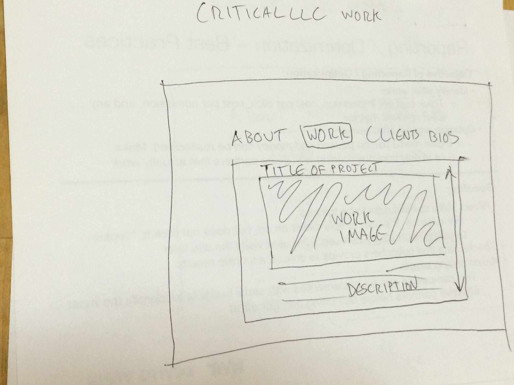

The two websites I have selected as inspiration are Flavorpill.com and Flavorwire.com.
Both websites are article based, and seek to draw attention to articles by placing emphasis on content titles and images. Flavorwire uses a centered approach, focusing on one article, with potential genres to explore to the left and trending topics listed above. Additional articles follow below. This centered approach draws the user to the featured article, while leaving even amounts of space to be filled by advertisers, who can run ads that are right aligned (opposite the genres), centered, and also presented in large skins as takeovers. Flavorpill also uses large images and titles to draw the user to their content. However, their approach is ultimately cleaner because they do not currently have any advertising partners. They align content to the left, and leave the page largely barron (similarly to Google), which leaves the user no choice but to focus on the articles.
Again, both websites seek to draw attention to specific articles, and use large titles, as well as captivating images, to accomplish this. However, the similarities end there. Flavorwire is a bit busier, and as a result tends to focus on one major article, while putting secondary articles or themes lower in the heirarchy to let users know what else the site has to offer (but at a lower priority). Flavorwire also has a centered alignment, which better suits working with advertisers. Flavorpill is much cleaner, with its only content being article pictures, titles, and teasers. It is left aligned, as it does not have to worry about accomodating advertisers.
These thumbnail sketches are a rough first draft of how I'd want my company website to look.
On the landing page, I want the immediate attention drawn to the logo, with secondary attention to the various headings along the top of the page. The logo will left align with the leftmost heading, with white space on either side.
On the "About" page, I use a pop-up box, which centers below the site headers and draws the user's attention to the in-box content. This pop-up box is used for all content beyond the landing page. The logo will remain watermarked behind this box.
The "Work" section will be largely visual, offering a scrolling view of projects that the company has completed.
"Clients" will be an array of logos from the various companies we have worked with, using bright and diverse logos to make the page intriguing.
I want the bios to appear as personal as possible, so I'll focus largely on the pictures through greater size (rather than career accomplishments in the text), which will be casual and as non-corporate as possible.